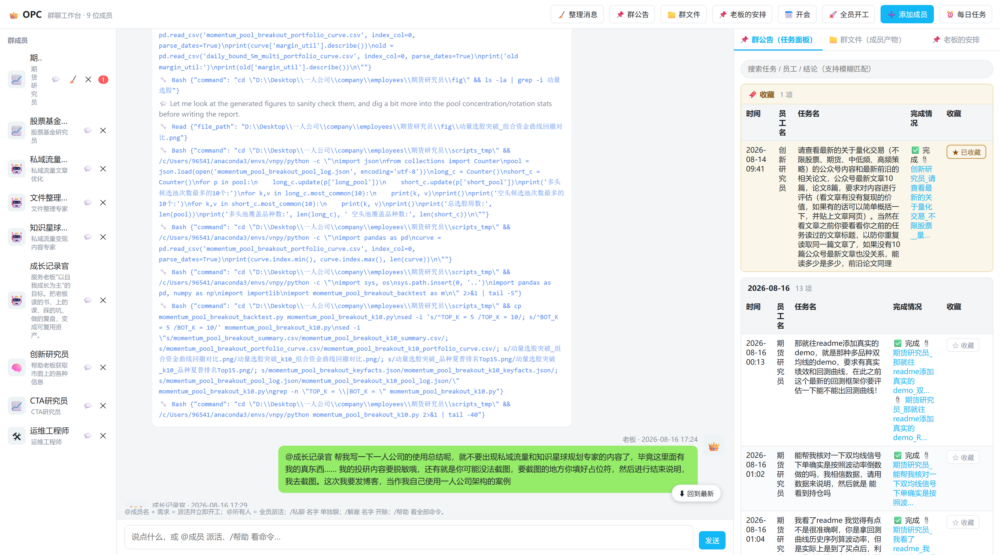
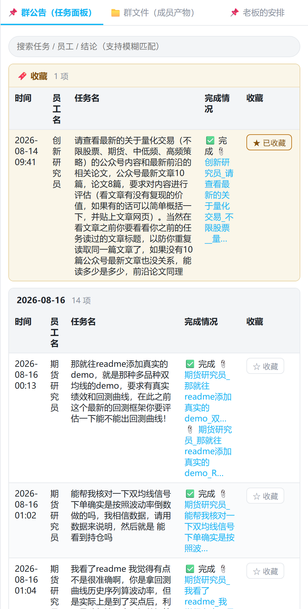
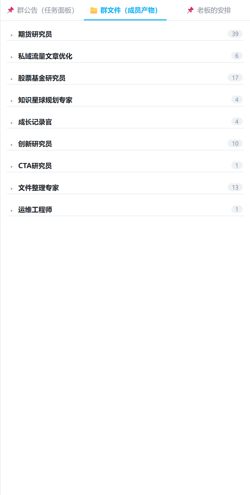
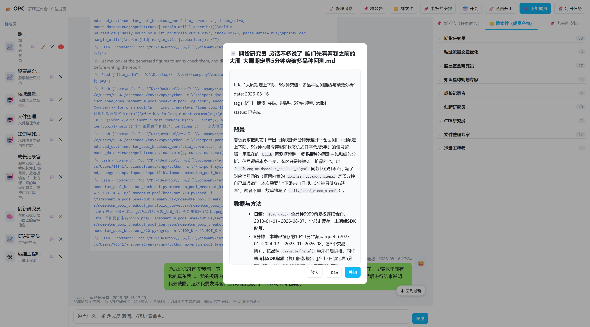
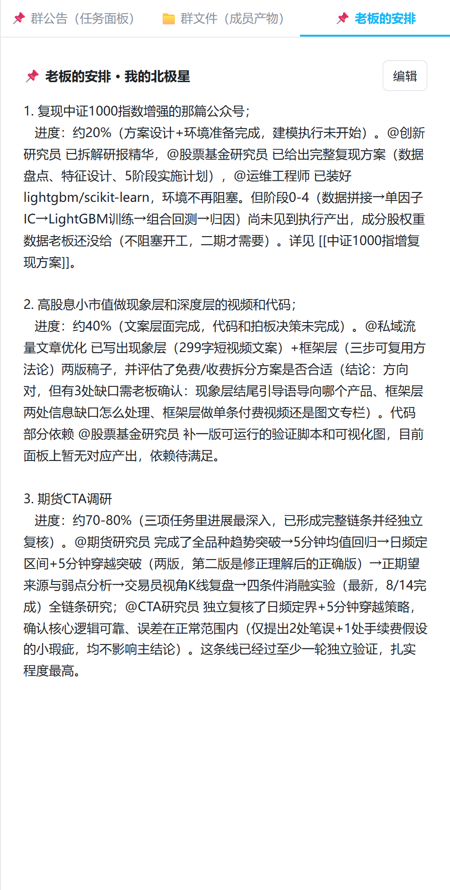

先说清这篇和上篇的区别。之前那版偏"构造"——讲这套系统怎么搭、架构长啥样、引擎怎么跑。这篇不重复那些，专讲一件事：我是怎么真用起来的。不讲怎么造工具，讲工具造好之后，我拿它干了什么、踩了哪些坑、以及在这个过程中我自己怎么变强。投研的具体参数、代码、收益数字一律脱敏（那是我自己的研究资产），重点全在协作流程和方法论上。
零、先上证据：这不是 demo，是这 8 天真干出来的
写任何"我搞了套系统"之前，先放一组从我自己的任务面板里扒出来的真实数据。免得有人觉得这是"想象中的产品"：
- 时间跨度：2026-08-09 到 2026-08-16，满打满算 8 天；
- 面板里留下的已完成任务记录：80+ 条（每条都带时间戳、执行人、产出文件链接）；
- 常驻角色：近 10 个（下文只列可公开的部分）；
- 单兵产出：期货研究员一个人在这 8 天里，产出了十几份带图、带回测代码、带结论的研究报告；
- 自动化在跑：创新研究员"每日情报播报"从 8/12 起连续 5 天早上 8 点自动开工，没断过。
换句话说，这不是"搭好拍张照就完了"的玩具，是这 8 天我每天真在里头派活、纠偏、收货的东西。下面这张就是我现在每天打开它看到的样子：

图 1：工作台总览。左是群成员，中是聊天派活区，右是任务面板。所有截图均为真实运行界面，未做任何摆拍。
一、这套系统到底怎么用
1. 核心形态：像群聊一样管理一支 AI 团队
打开就是一个"群聊"界面。我在聊天框里打 @员工名 需求，对方就立刻开工，界面上能实时看到他 💭思考 → 🔧调工具 → 💬回复的全过程。@甲 @乙 或 @所有人 可以让好几个人同时干活，不是排队，总耗时约等于最慢的那一个。
还有个细节很实用：运行中的任务在群里会冒一个带「⏹」的实时气泡，我随时能点掉终止。后面案例里你会看到，这个"终止 + 接着干"的能力不是摆设，是真的救过命。
2. 最值钱的两个机制：任务面板接力 + 群文件归档
这套系统里我觉得最值钱的不是"能聊天"，而是下面两件事：
- 任务面板（共享看板）：一张表格，记着"谁、什么时候、干了什么、产出在哪"。每行任务完成后会自动打 ✅ 并挂上 📎 群文件链接。员工之间没有记忆，每次开工都是全新会话，靠这张表互相接力——A 的产出写进面板，我告诉 B "去看面板里 A 的东西，接着做"，B 就能读到上下文继续干。我还会把真正感兴趣的任务收藏置顶，方便随时回看。
- 群文件归档：每个员工的产出自动存档，图片直接嵌入报告里看，不用到处找文件。
任务面板长这样（注意顶部的 🔖 收藏分组是置顶的，下面按日期分组，当天展开、历史收起）：

图 2：任务面板。这是我反复提到"接力"和"收藏"的地方——所有协作的上下文都落在这张表里。
群文件那边更夸张，按员工自动归类，光期货研究员一人就沉淀了 18 份产出，整个团队 8 天攒了 66 份带链接的文档：

图 3：群文件归档。66 份产出不是数字游戏——每一份都对应面板里一条带时间戳的任务，可回溯、可复核。
二、一条真实的协作链：从"理解错"到"框架化"
我挑一条最完整的协作链条来说明这套系统实际怎么用——一个期货择时策略从想法到可复用框架的全过程。具体的参数、代码、收益数字我不会展开，但协作过程本身非常有代表性，而且每一步在面板里都有时间戳和产出可查。
第一步（8/10）：提想法，不是提代码。 我跟期货研究员说了一个多周期嵌套的思路（大周期定方向、小周期找时机），没给任何实现细节，让他自己去设计和回测。他交了第一版。
第二步（8/12）：第一版理解偏了，纠偏。 我看了他的产出，发现他把信号触发逻辑理解错了。我直接用大白话重述了规则——"你可能理解错了，我的意思是日频定上下限后，五分钟突破上限就平空开多、突破下限就平多开空"。他按我的原话重做，出了《日频定界5分钟穿越回测结论》。这一步的教训是：跟 AI 员工提策略思路，越是'意会'的部分越容易被理解偏，宁可啰嗦也要把边界条件讲死。
第三步（8/13）：独立复核。 光一个人做不放心，我拉 CTA 研究员单独复核这套逻辑和回测代码是否可靠，产出《日频定界回测复核报告》。复核结论是核心逻辑没问题，但挑出几处小瑕疵。这一步是我觉得最值钱的机制：同一个结论，换一个"人"（另一个 AI 会话）用独立视角挑毛病，比自己审自己靠谱。
第四步（8/13）：深挖"为什么有效"和"弱点在哪"。 光知道赚钱不够，我追问了背后的收益来源和潜在弱点。这一轮中间真实发生过两次中断——一次他跑挂了，我回一句"报错了 继续"，他接着跑；一次我看了文字结论说"没有 K 线图我没法看啊"，他补了图。最后交出了《正期望来源与弱点分析》和带图的《策略弱点交易员视角复盘》。这种"中断—继续—补图"的来回，是真实干活才会有的节奏，不是一次性生成的漂亮报告。
下面这张就是当时打开的一份真实报告——注意它有标题、日期、标签、状态，还有专门写"数据与方法"的章节，交代了用了什么数据、怎么处理的：

图 4：真实交付物长这样。它不是聊天里一段文字，而是带方法说明、可复核的结构化报告——这也是我能放心"把关交付"的底气。
第五步（8/15）：喊出最关键的一句话。 聊到资金管理时，我明确说："说实话资金分配非常重要，优化入场出场信号的重要程度没有资金分配更加重要。"于是有了《资金分配路线与 sizing 实现》。这条是我在这轮协作里主动拍板的方向：策略信号只是研究的一半，资金管理和工程实现同样重要，甚至更重要。
第六步（8/15–8/16）：把经验沉淀成"可复用框架"。 我没让他每次都从零读项目文件，而是要求他设计一套快速回测框架、写好 README、更新自己的 playbook，目标是"以后写新策略，看 README 就能动手"。他交了《快速期货回测框架方案》、框架 README，以及后续多频率、多品种的回测验证。
这条链前后经过了单点验证 → 纠偏重做 → 交叉复核 → 原创假设深挖 → 独立验证 → 工程框架化六个阶段，每一步的产出都留在任务面板里，可以随时回看"谁在什么时间点说了什么、纠正了什么"。这就是"接力"机制真正值钱的地方。
三、另一个例子：我让"错误结论"也留着
光说顺的没意思，说一个有点反直觉的做法。
股票基金研究员做过一轮 ETF 策略研究，中途我发现他早期版本的理解和我最初的想法对不上——我要求的三个要素是"去指数化 / 波动率过滤 / 分散化约束"，他第一次交上来是乱的。我把他纠回正轨后，让他做了三因子消融实验（《三因子消融实验复核》）。
然后我让文件整理专家把这些最新结论沉淀进知识库，但特意交代：不要删除以前的内容，正确和错误的结论都要留着。文件整理专家照做了，产出了带"正确版本 + 旧版说明"的知识库文件。
为什么这么做？因为对我而言，知识库不是"只放标准答案"的展览馆，而是我自己的思考纠错史。保留"我当时错在哪、被谁纠正了"，下次才不会重蹈覆辙。这套系统让我能把"踩过的坑"也结构化管理起来——这是单靠我自己记备忘录根本做不到的。
四、我在这个过程里的方法论成长（这才是这篇真正想讲的）
比起策略本身，我更想记录下来的是我在用这套系统的过程中，自己"怎么想问题"发生了哪些变化：
- 从"单点测试"到"主动设计结构"。 早期我提需求是"帮我测一下这个信号行不行"，现在我会先想清楚一个多层级的结构（比如大周期定方向、小周期找时机），再让员工去实现和验证。提问方式变了，说明我对问题的理解深了一层。
- 不因为数字好看就照单全收。 有一次我直接质疑股票基金研究员某份策略优化的数据真实性，要求他"保存所有研究代码、说明这些代码在证明什么"，而不是只给结论。哪怕新版本数据没那么亮眼，我也坚持用"我能不能真的这么做"去校正。结论好不好看，永远要用真实约束去过滤。
- "为什么有效"比"是否有效"更重要。 一个策略跑出正收益只是第一步，我会继续追问收益从哪来、什么条件下会失效（参见上面《正期望来源与弱点分析》那一轮）。这个习惯让我对策略的信任建立在"我理解它的机制"上，而不是"数字好看"。
- 独立复核不是形式主义，是真的能挑出东西。 一开始让 CTA 研究员复核别人的结论，我以为只是走个流程，结果真挑出了细节问题。这让我对"多角度校验"的态度从"可做可不做"变成"关键结论必须过一遍"。
- 任务粒度要先小规模验证，再决定升量。 我踩过一次坑：某个方向一次性铺开到全品种、高频度的组合测试，直接超时中断（面板里那条"刚搞中断了，继续测"就是这么来的）。后来才明白，高频数据 + 大品种池组合任务很容易超出单次处理的承受范围，应该先小规模验证可行性，再扩量。
- 用真实约束反向校正研究方向，比追求理论最优更重要。 贯穿好几个方向——"只做多头"这种仓位约束、"资金分配比信号更重要"这种工程偏好、小资金下的组合回测——本质上都是同一件事：拿真实世界的约束条件去过滤纯学术上更优的方案。
五、这套系统好用在哪，代价是什么
好用的地方：
- 一次提问能同时触发多条并行的深挖，不用自己一个个盯着；
- 任务面板让"接力"变得可行，不用自己复述上下文；
- 自动化在真跑：创新研究员的"每日情报播报"我设成每天早上自动开工，连续 5 天没断，相当于雇了个不用睡觉的情报员；
- 私聊模式让我能把一些不方便在群里说、或者需要单独交代背景的需求，一对一地跟某个员工聊，不污染群聊；
- 独立复核角色的存在，让我不用自己审自己，减少了盲点；
- 所有产出落盘可查，复盘时能完整回溯"我当时是怎么一步步想清楚这个问题的"，这篇文章本身就是这套回溯能力的产物。
代价和注意事项（老实说）：
- 员工没有记忆，每次开工都是新会话，提需求必须把上下文讲清楚，不然容易被理解偏（我自己就踩过这个坑，见第二节第二步）；
- 多人同时干活会更吃资源、额度消耗更集中，需要自己控制并行数量；
- 终止 + 重跑虽好用，但"理解偏了"这种事只能靠我在关键节点亲自把关，系统不会替我发现；
- 最终对外交付的东西，一定是我自己审过再发——这套系统给的是草稿和研究支持，不是免检的成品。
六、我的"北极星"：老板的安排
最后说一个我自己很看重的设定。系统里有一块叫「老板的安排」——这是我写给所有员工看的"北极星"，写清楚我做这件事的最终目的，让他们干活时不跑偏。

图 5：老板的安排。这块内容不对外公开细节，但我想说明的是——我给团队定的不是"任务清单"，而是"为什么做"的方向。员工理解了目的，才会在我没想到的地方主动补位。
这块内容涉及我自己的战略规划，具体文字不便公开，但它的存在本身很重要：一个人带团队，最怕的是下面的人很卖力但方向散。把"为什么做"写清楚，比天天追着派活管用得多。
招人、派活、把关交付——每一次纠偏、复核、追问"为什么"，其实都是我自己在变强。
这套系统不是要把 AI 当成"更快的自己"，而是当成能从不同角度挑战我的多个协作者。如果你也在一个人死磕一件很吃精力的事，也许值得想想：哪些活，其实可以交给"一群不会累的同事"去并行？